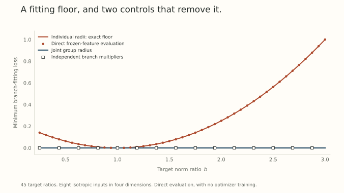

We now have an exact obstruction: prescribed branch maps can fail to admit representatives with independent fixed matrix radii and one shared gain. We also have a proposed repair, grouping the matrices or restoring branch multipliers.
That is a good place to start a research project. It is not yet the conclusion of one.
The strongest next question is whether the obstruction survives the freedoms of the actual module and predicts an observable learning consequence after good optimization controls. A convincing test should be able to tell us that the explanation is wrong.
First reproduce the claim in a setting it actually covers
Use fixed isotropic features and two target maps whose Frobenius norms are one and \(b>0\). Impose individual radii \(R_1=R_2=1\) and a shared scalar gain. Part 11 gives
\[ g_*=(1+b)/2,\qquad \mathcal L_*=(b-1)^2/4. \]
This is a prediction over a whole family of target imbalances, rather than a single failed training curve.
For a small reproducible check, I used four-dimensional features taking the eight values \(z=\pm2e_j\) with equal weight. Their second moment is exactly \(I\). A fixed matrix \(A_1\) has Frobenius norm one, and \(A_2=bA_1\). The code evaluates the actual branch-output squared loss at the constrained optimum.
Across 45 ratios from \(0.25\) to three, this evaluated loss matches the formula within \(10^{-12}\). A joint group radius and independent branch multipliers both give zero fitting loss to numerical precision in the same calculation.

These are direct finite-design evaluations, not neural-network training results. They check the algebra and the proposed intervention’s feasible set. Optimizer convergence is a separate experiment.
Attention can preserve products while changing branches
For a bias-free attention head, using column-vector inputs, write
\[ q=W_Qx,\quad k=W_Kx',\quad v=W_Vx. \]
Without positional rotations, the score depends on \(W_Q^\top W_K\). The value-output composition depends on \(W_OW_V\). For invertible matrices \(S\) and \(T\) of the appropriate head dimensions, the transformations
\[ W_Q\mapsto SW_Q,\qquad W_K\mapsto S^{-\top}W_K \]
and
\[ W_V\mapsto TW_V,\qquad W_O\mapsto W_OT^{-1} \]
preserve those products. The individual branch maps and their Frobenius norms may change.
Thus failure to preserve each \(W_i\operatorname{diag}(\gamma)\) is not enough to establish failure to preserve the attention function. Even equality of score matrices is sufficient rather than necessary for equality of softmax weights, since rowwise additive constants cancel.
An explicit escape from the branch obstruction
Consider a scalar head with no positional rotations. The unconstrained teacher uses the shared gain \(g=1\) and
\[ W_Q=1,\quad W_K=2,\quad W_V=1,\quad W_O=1. \]
Its query, key, and value maps are respectively \(x\), \(2x\), and \(x\). Part 11’s shared-gain reasoning rules out preserving all three maps while setting \(|W_Q|=|W_K|=|W_V|=1\).
Now require those three unit radii but leave \(W_O\) unconstrained. Choose
\[ g'=\sqrt2,\quad W_Q'=W_K'=W_V'=1, \quad W_O'=1/\sqrt2. \]
The new query and key maps are both \(\sqrt2x\). Their product is still \(2xx'\), so the softmax attention weights are unchanged for every input sequence. The values scale by \(\sqrt2\), which the output projection cancels. The final attention output is identical.
The code verifies this directly on a small token sequence. More importantly, the displayed product identities prove it for arbitrary scalar token inputs in this specified architecture.
This is a negative control with teeth. The branch-map obstruction is real, yet it does not imply an output-function obstruction under these constraints. Fixing the output projection too would be a different question and would require another analysis.
Positional operations restrict the available transformations
With rotary position matrices \(R_p\), a query-key score contains
\[ x^\top W_Q^\top R_p^\top R_q W_Kx'. \]
After the general factor transformation above, the middle expression becomes
\[ W_Q^\top S^\top R_p^\top R_q S^{-\top}W_K. \]
An arbitrary \(S\) no longer cancels. Scalar rebalancing \(S=cI\) still does. Other surviving transformations depend on the positional operators and the rest of the architecture.
Query/key normalization, shared heads, biases, masks, and nonlinear gates can alter the analysis again. The correct equivalence class belongs to the actual computation graph, not to a convenient isolated matrix identity.
Measure the mechanism before running a leaderboard
A useful progression has several stages.
- Frozen branch teachers. Vary target imbalance and gain bounds. Compare measured fitting losses with the exact floor and channelwise feasibility criterion.
- Frozen attention teachers. Supervise score and final-output behavior. Optimize over the remaining factorization freedoms before declaring a capacity restriction. Include the scalar escape above as a control the analysis must get right.
- Learned features. Let upstream representations adapt. Determine whether they remove the predicted restriction or merely hide it behind extreme gain conditioning.
- Completed training comparisons. Only after a mechanism survives the earlier tests, compare tuned decay, fixed norms, grouped constraints, and existing multiplier baselines at matched data and tuning budgets.
The observable should follow the claim. A branch reconstruction error measures a different target from final task loss. Parameter norms, angular displacement, effective map changes, and gain trajectories diagnose different parts of the mechanism.
When intervening at a checkpoint, preserve the represented function and transport optimizer state according to the convention being tested. Resetting moments changes the intervention. If an exact state transport is unavailable, measure and report that limitation.
What would strengthen or weaken the direction?
The explanation strengthens if compatibility or bounded-gain conditioning predicts a failure on new targets, survives the correct attention symmetries, and predicts a repair that transfers to learned-feature tasks. An effect that survives angular-schedule controls is more informative than an early curve at one nominal learning rate.
It weakens if alternative factorizations remove the restriction, upstream features absorb it, or existing multipliers and scheduling explain all practically relevant differences. Those outcomes should change the research direction rather than be relabeled as optimizer improvements.
The mathematical burden also includes prior work. A positive-feasibility criterion is an elementary matrix-scaling calculation. A publishable novelty claim needs a broader comparison with existing scaling, invariant optimization, and normalization results, not just an unfamiliar notation.
Return to the question about scale
The series began with identical predictors taking different gradient steps. That forced us to distinguish functions from coordinates. Weight decay, momentum, layer norms, support directions, and manifold constraints each exposed another part of that distinction.
The final question is sharper than fixing all norms or freeing all gains: which redundant scales can be controlled while preserving useful module behavior, and what measurable consequence follows?
We have exact toy calculations and controls that can reject an overly broad interpretation. We do not yet have evidence of a new optimizer advantage on a trainable Transformer. That is the research program to carry beyond these twelve posts.
Try to break the explanation
- At \(b=2\), what fitting loss does the independent-radius frozen-branch model predict? What do the two scale-restoring controls achieve?
- Verify the query-key and value-output products in the scalar attention escape.
- Why would evaluating feasibility only at a checkpoint that already satisfies the constraints be a weak test?
Answer sketches
- The floor is \(1/4\). A joint radius and independent branch multipliers can each achieve zero under the stated frozen-feature setup.
- The original query-key product is \(1\times2=2\), and the new one is \(\sqrt2\times\sqrt2=2\). The value-output product is one in both cases.
- Its own branch maps are feasible by construction. Use prescribed teachers, unconstrained target maps, or alternative representatives that test a prediction beyond that tautology.
Yo twin, go read…
Learnable Multipliers, Section 4.1 and Appendix C, discusses architectural scale symmetries and placement. RoFormer, Section 3.2, gives the rotary-position construction that limits arbitrary basis changes.
Hyperball May Not Be a Free Lunch, Section 4, motivates schedule controls, and Fantastic Pretraining Optimizers and Where to Find Them, Sections 3 and 4, motivates completed-budget and tuning comparisons. The frozen-teacher evaluations and scalar attention escape here are self-contained synthetic controls. No literature training claim is reproduced.